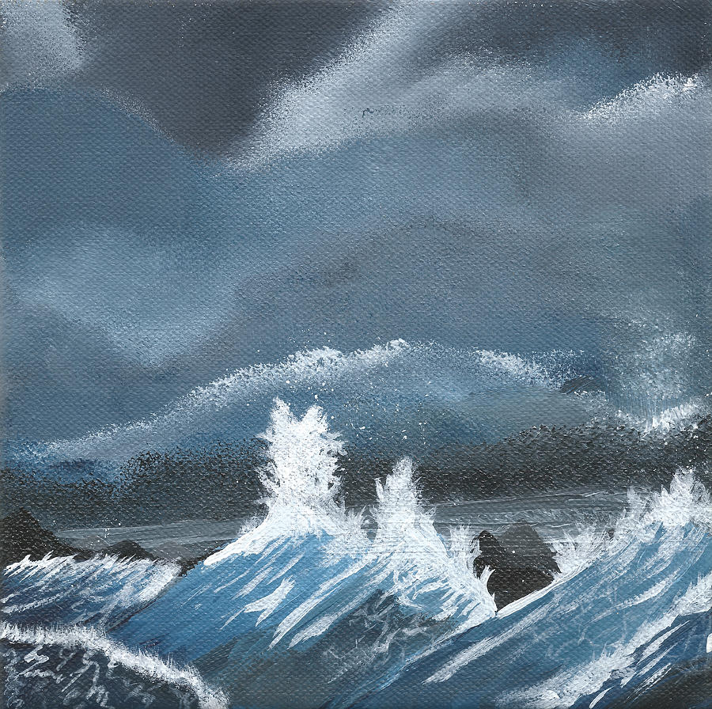
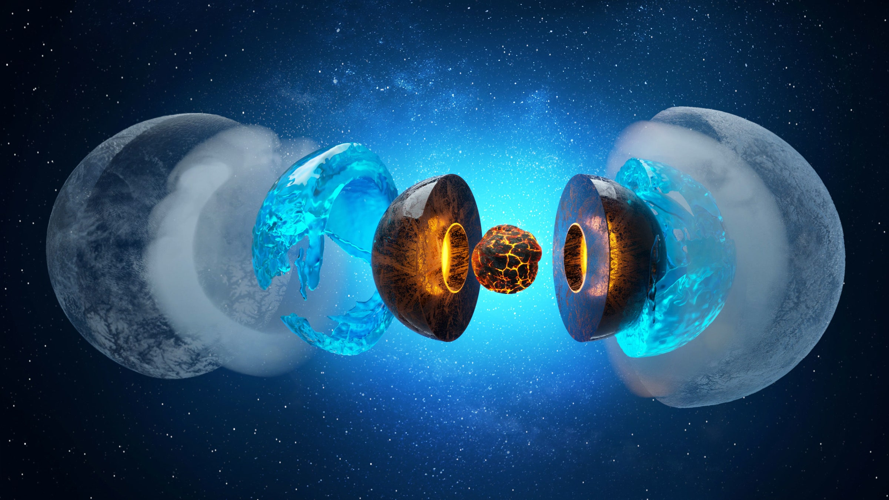

Water is the last one of the four elements. It is both cold and wet and as might be expected, water represents things that are liquid.
Water has a high specific heat index, meaning that it takes a lot of energy to change its temperature. This is essential for life to survive on a planet. The abundance of water on the earth keeps the planet in a very short but comfortable temperature range. The average surface temperature of the earth is 59 ° F with the highest recorded temperature 135.9 ° F and the lowest recorded temperature -128.6 ° F.
| ELEMENT | TEMPERAMENT | MYSTIC CHARACTER | GENERAL |
| water | water, white | compassionate, healer, kindly understanding | softness and repose |
There are a lot of sayings for water. For instance, Leonardo da Vinci once said: "Water is the driving force of all nature.". Also in a whole bunch of traditions, life was associated with water. So it is essential for life such as other 3 elements. If you find water somewhere in the universe, you can look for life. Most probably you will find it.
So these were 4 classical elements. What was your favourite one?

The Four Elements by Artus Wolffort, before 1641
"Quid ad aeternum?"